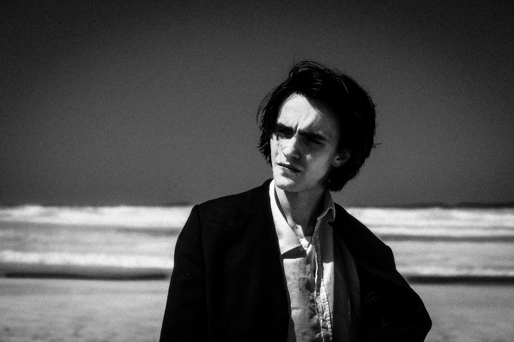

Biografia
Boris Pimenov (Belgorod, Russia, 2003) è un artista e regista italo-russo attivo nel campo delle arti performative e dell’audiovisivo. Trasferitosi in Italia a sette anni, a diciassette intraprende il percorso teatrale sotto la guida di Loris Seghizzi, di cui frequenta il laboratorio settimanale dal 2022 al gennaio 2026.
Il suo percorso artistico prende forma dopo diversi anni di studio laboratoriale. Nel 2023 realizza il cortometraggio indipendente Il Matto e la Pesca, ispirato ad Antonio Moresco e a Cinico TV; ad agosto è attore in Tempo Infausto, diretto da Cesare Inzerillo e Loris Seghizzi, nell’ambito del Festival Teatro del Bicchiere. Nello stesso anno partecipa come attore e video reporter alla tournée della compagnia di giro Sartoria Caronte, esperienza che ripete nel 2024 come video reporter.
Nel 2024 realizza in solo Shinel’ (Il Cappotto), ispirato a Gogol’. È attore e video artist in Rasi al Suolo, diretto da Loris Seghizzi e Cesare Inzerillo, e in estate regista video e video artist per la produzione Bohème, la povertà mi è lieta, per la regia di Seghizzi.
Il 2025 segna il passaggio a una dimensione più autonoma: vince il bando Residenze Digitali 2025 con Eburnea (prima edizione), spettacolo interattivo phygital. Firma la scenografia video di Tosca al Festival di San Gimignano e, nello stesso anno, è regista video e video artist in Tosca d’essai, spettacolo ubiquo diretto da Loris Seghizzi. A fine anno realizza, come regista, autore, attore, montatore e direttore della fotografia, il cortometraggio indipendente Il Libro dei Dolori dell’infanzia.
Nell’aprile 2026 porta Eburnea nello spazio fisico a Sansepolcro, a Kilowatt, insieme a Rossana Cannone. In estate firma tre scenografie video per il Saaremaa Opera Festival (Kuressaare, Estonia): Cavalleria Rusticana e Gianni Schicchi, dirette da Giandomenico Vaccari, e L’elisir d’amore, diretto da Marco Voleri. Ad agosto cura la regia broadcast dello spettacolo ubiquo La Giostra, diretto da Loris Seghizzi, al Collinarea Festival. Nell’ottobre 2026 realizza la scenografia video di Stabat Mater, spettacolo di teatro danza diretto da Flavia Bucciero (Movimento InActor), e porta in scena il primo studio di Osculo d’amore, poema visivo teatrale ispirato a Rainer Maria Rilke, di cui è regista, interprete, autore e video artist.
